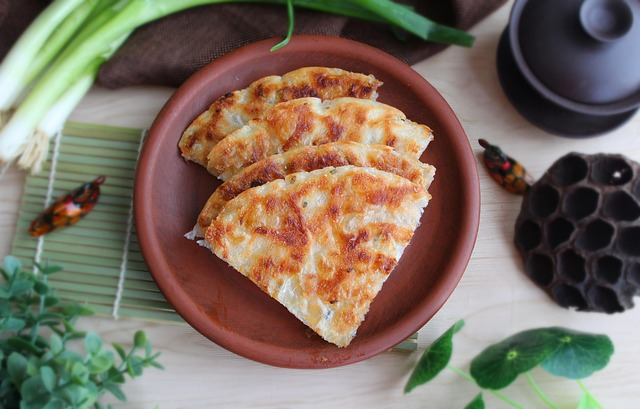

Home
Chinese Scallion Pancake Recipe

Description
Chinese scallion pancakes (green onion pancakes) or "cong you bing" is a popular breakfast food in China. It is a simple and quick to make dish,
and it is filling enough to get you through 'til your lunch break.
It is a combination of flakey dough and chopped green onions, fried in lard and oil. It may not be as unhealthy as American fast food, but you're
not likely to impress any nutritionists, dieticians, or fitness trainers with it either.
Ingredients
- AP Flour (250g)
- Hot Water(160g)
- 1 Green Onion (Large)
- Five-Spice Powder
- Salt
- Lard
Steps
- Mix the flour and hot water together in a mixing bowl, then mix together with chopsticks until the dough is soft but not sticky.
- Knead the dough until it is a cohesive rough mass -- it does not yet need to be smooth.
- Cover it and let it rest at room temperature for about 15 minutes.
- Knead the dough again, this time until it becomes very smooth.
- Finely chop the green onion.
- Mix melted lard with flour to form a paste with which to laminate the dough.
- Add the flour/lard, salt, and five-spice powder to a small bowl and mix it into a smooth paste. Add a little additional flour if the
consistency is too watery.
- Coat your work surface with a thin layer of vegetable oil, then use a rolling pin to roll flat the dough.
- Place the paste onto the dough and evenly brush it across the surface, then sprinkle the chopped green onions on top.
- Loosely roll the dough into a rope from the shorter side.
- Cut the rope into even thirds, then standup a piece with the cut side facing up. Press down with your hand, then roll it flat with
a rolling pin.
- Heat oil in a frying pan over high heat. Make sure the pan is hot before you add the pancakes.
- Add the pancakes and lower the heat to medium-high, then cover the pan with a lid. After about 4 minutes, check that the first side is
golden brown. If it is, then flip the pancake and cook the other side until it is about the same color.
- Place on a wire rack if possible for a few minutes to let them cool down without allowing for condensation.